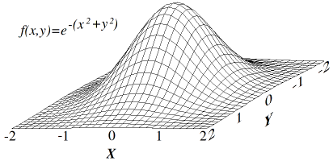

Gradient Descent & Backpropagation
So far we have looked at the structural and mathematical foundations of neural networks as well as some supervised learning methods in single-layer models. In this document we will look at reinforcement learning in multi-layer models as well as the underlying theory of such (gradient descent and backpropagation).
Unlike in supervised learning, in reinforcement learning, the most desirable output for a given input is not given as a reference to the model. Instead, a cost or reward value is given to the model, which itself is proportional to how close the output produced was to the maximally desired output: \[ E = \frac{1}{2} \sum_{i=1}^{n} (z_i - t_i)^2 \] In this equation \(i\) is the identifier of one of \(n\) output nodes denoted as \(z_i\). Then, \(t_i\) is one of \(n\) comparison nodes that exist in a one-to-one pairing with the output. The difference between the actual output and target output is then squared to weight large differences more heavily than small differences. By thinking of \(E\) as a height, we essentially create a cost landscape over our output space, which is most easily visualised in two dimensions: 
Before looking at gradient descent, we should look at the simpler case of linear regression and the least-squares method. In linear regression we take a set of data points from the observation of the relationship between an independent variables (input) and a dependent variable (output). In relation to neural network models, we can think of the independent variable as the input and the dependent variable as the output, and the mapping between the two as the the training set. Consider the simplest example of a single independent and dependent variable: \[y_1 = \beta_0 + \beta_1x_1\] Say we have a set of input-output pairs \((1,6),(2,5),(3,7),(4,10)\) which produce the following system of linear equations: \[6 = \beta_0 + 1\beta_1\] \[5 = \beta_0 + 2\beta_1\] \[7 = \beta_0 + 3\beta_1\] \[10 = \beta_0 + 4\beta_1\] For any reasonably sized training set, it appears that our system will be overdetermined (it will possess more equations than unknowns), and thus unsolvable if any one of the above equations is linearly independent from any other. We can however introduce the concept of residuals, which change our initial equation to the following: \[r_1 = y_1 - (\beta_0 + \beta_1x_1)\] Thus, each input-output mapping has an associated residual, which can be thought of as a cost, because if the difference is great between the output produced and the output observed, the residual is great, and our equation is non-predictive. Similarly, if the difference is minimal, the residual is minimal, and our equation is predictive. It is no use having an equation that perfectly maps only one input to an observed output, so we compute an overall cost as follows: \[S = \sum_{i=0}^{n} r_i^2 \] Squaring the residual means that large differences are weighted heavier than small differences. We can now visualise the linear regression like so:
Calculating the sum of the example inputs above gives us an expression of the cost function: \[4\beta_1^2 + 30\beta_2^2 + 20\beta_1\beta_2 - 56\beta_1 - 154\beta_2 + 210\] To minimise S we set the partial derivatives to zero, and solve for \beta_1 and \beta_2. This give us the optimal solution to predicting the dependent variable from the independent variable. Multiple linear regression is identical to the methods described so far, except that it attempts to predict a dependent variable from a set of independent variables (an n-dimensional input space).